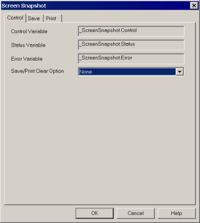

|
|
|
|
|
|
|
|
The steps below show how to set up snapshot saving for your project. Once screen snapshot is enabled for the target, the snapshot control variables, Control, Error, FileNo, and Status, are automatically created in the Variable Editor. For more information on the snapshot control variables, see Section 19.2.3.1, Screen Snapshot Control Variable.
In the target node's properties, select Enabled from the Screen Snapshot field to enable screen snapshots for the target.

The Screen Snapshot dialog box displays once screen snapshots are enabled.
Select the Save/Print Clear Option for your screen snapshot. For more information, see Section 19.2.4, Snapshot Save/Print Clear Option.
Click the Save tab and define the snapshot save settings as required. For more information, see Screen Snapshot Save Settings.
Set up a method for writing values to the screen snapshot control variable to take snapshots and save them to file. For more information, see section 19.2.3.1, Screen Snapshot Control Variable.

We recommend using a switch to trigger screen snapshots. If you use a keypad to trigger a snapshot, the snapshot may include a picture of the keypad.
When the file name property in the Save tab is set to automatic, the target machine will overwrite previously saved screen snapshots whenever the target machine is shut off and turned back on. To prevent screen snapshots from being overwritten after the target machine is shut off and turned back on, set the file name property in the Save tab to manual and link the File No. Variable to a PLC variable so that the value is not lost when the target machine is shut off. For more information, see Screen Snapshot Save Settings.